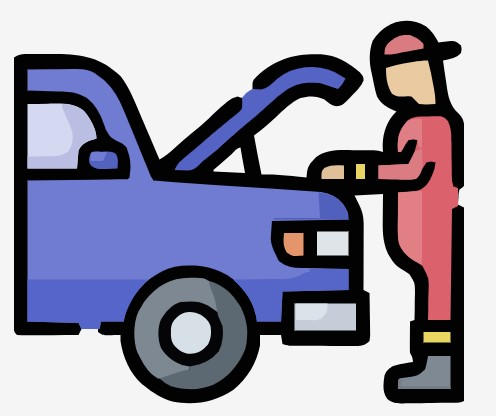
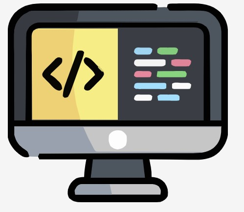
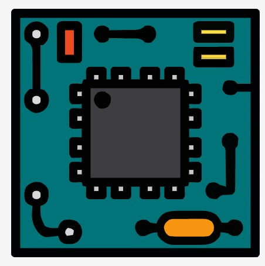
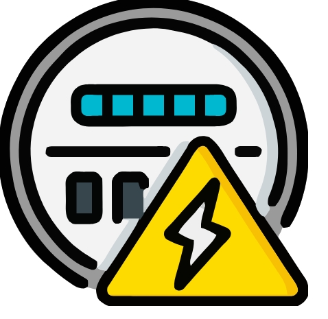

Inicio
Buscar
Mi Perfil
Iniciar Sesión
Semestre 4
Materias comunes y de especialidad.
Materias Comunes
Cálculo Diferencial
Física II
Química II
Inglés IV
Dibujo Técnico II
Materias de Especialidad
Manufactura Asistida por Computadora
Aeronáutica
Automotriz
Computación
Sistemas Digitales
Sistemas de Control Eléctrico
 Manufactura Asistida por Computadora
Manufactura Asistida por Computadora